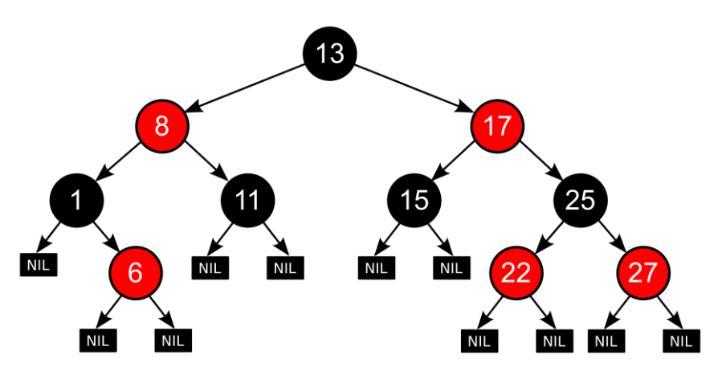

Lec 2: Red-Black Trees and B+ Trees⚓︎
约 4817 个字 10 行代码 预计阅读时间 24 分钟
Red-Black Trees⚓︎
注意
在红黑树中
Definition⚓︎
红黑树(red-black trees) 本质上也是一棵二叉查找树，它的目标同 AVL 树一样，也是尽可能地维护二叉查找树的平衡。下图表示的是红黑树的一个节点：
- 节点除了有指向左右孩子的指针外，还额外多了一个指向父节点的指针
- 此外又多了一个存储颜色的字段，占 1 bit 空间（红色 / 黑色）
- 红黑树里的空指针
NULL一般会称为NIL，它代表的是一个外部节点，其颜色为黑色。规定：红黑树的孩子要么是实际存在的节点，要么是个空节点
于是有了以下定义：
定义
红黑树是一棵二叉查找树，它满足下面几条性质：
- 每个节点的颜色非黑即红
-
根节点是黑色的
根据 wiki 上的内容，第二条性质并不是必需的。
-
每个叶子节点 (
NIL) 是黑色的注意
- 这里的「叶子结点」并不是指没有孩子的节点，它特指空节点
NIL。而空节点一般不会被画出来的，所以需要记住这一点，否则在对红黑树操作时很容易弄错 - 如果定义中缺少这一性质，那么一棵 skew tree，甚至是链表都有可能符合红黑树的定义
- 这里的「叶子结点」并不是指没有孩子的节点，它特指空节点
-
 如果一个节点是红色的，那么它的孩子都是黑色的
如果一个节点是红色的，那么它的孩子都是黑色的- 也就是说，不会出现相邻两层节点都是红色的情况，但是黑色节点可以是相邻的
-
 对于每个节点，从该节点出发，到它后代叶子节点（即
对于每个节点，从该节点出发，到它后代叶子节点（即NIL节点）的所有简单路径包含了相同数量的黑色节点（这是实现红黑树平衡的关键）注意
红色节点要么没有孩子，要么有两个黑色的孩子，否则无法满足第五条性质。
- 在红黑树中，实际存在的节点被称为内部节点(internal node)，而空节点
NIL被称为外部节点(external node)
 - 在红黑树中，实际存在的节点被称为内部节点(internal node)，而空节点
为了量化红黑树的平衡程度，我们为节点 x 定义一个称为「黑高」(black height) 的字段 \(\mathrm{bh}(x)\)：它表示从节点 x 出发到叶子节点 (NIL) 的任意简单路径上黑色节点的个数（不包括节点 x）
- 根据定义的性质 5，由于每条简单路径的黑色节点数相同，所以便可以任意选取其中 1 条路径
- 整棵树的黑高等于根节点的黑高
引理：一棵有 \(N\) 个内部节点的红黑树，它的高度至多为 \(2\log (N+1)\)。
- 由该引理知，尽管红黑树相比 AVL 树看起来不是那么平衡，但是它能够确保树高是 \(O(\log N)\) 的，所以红黑树也是一棵相当平衡的树。
证明
我们要证明两个不等式：
- 对于任意节点 \(x\)，\(\mathrm{sizeof}(x) \ge 2^{\mathrm{bh}(x) - 1}\)
- \(\mathrm{bh}(Tree) \ge \dfrac{h(Tree)}{2}\)
用归纳法证明
- 当 \(h(x) = 0\) 时，\(x\) 是空节点，所以 \(\mathrm{sizeof}(x) = 2^0 - 1 = 0\)
- 归纳假设：对于满足 \(h(x) \le k\) 的节点 \(x\)，该不等式均成立
- 当 \(h(x)=k+1\) 时，\(\mathrm{bh}(child) = \mathrm{bh}(x)\) 或者 \(\mathrm{bh}(x)-1\)
- 因为 \(h(child) \le k\)，所以 \(\mathrm{sizeof}(child) \ge 2^{\mathrm{bh}(child)} - 1 \ge 2^{\mathrm{bh}(x)-1}-1\)
- 所以 \(\mathrm{sizeof}(x) = 1 + 2\mathrm{sizeof}(child) \ge 2^{\mathrm{bh}(x)}-1\)，得证
由定义知，对于每个红色节点，它的孩子都是黑色的，因此从根节点到叶子结点的所有简单路径上，至少有一半的节点（不包括根节点）是黑色的，即不等式 2 成立
由两个不等式可以得到：
即 \(h \le 2 \log(N+1)\)
Operations⚓︎
Insertion⚓︎
与 AVL 树类似，我们希望插入的节点尽可能不影响红黑树的平衡程度，换言之就是尽可能地不改变红黑树的黑高，因此新插入节点的颜色应该是红色的。
- 如果运气好的话，即新插入节点的父节点是黑色的，我们无需作任何调整
- 但很可能会遇到父节点也是红色的情况，这样需要我们做一定的调整，下面根据课件给出的例子，分情况讨论调整的方法
分析
注意
- 这块内容是红黑树的灵魂部分，所以需要仔细品读和深入理解
- 「调整」一栏的图中，黑色三角形表示以黑色节点为根节点的子树

新插入节点的父节点，以及父节点的兄弟节点都是红色的。
先插入 5——OK！再插入 4——No！4 和 5 是相邻的红色节点，没有满足定义的要求，所以我们要开始调整这棵树了。


- 第一步相当简单，只需要交换父亲节点、父亲的兄弟节点与祖父的颜色即可
- 但正因为太简单了，所以在调整后还会出现四种情况：
- 最理想的情况是祖父节点是根节点的时候，让根节点变黑即可（图的最右侧所展示的情况）
- 但更常见的是调整完一次后，这棵子树的上一级子树（红框表示染色后的子树）还在我们要讨论的三种情况内——所以慢慢来吧 ~
注：Case 1 应该还有 3 种对称情况（新插入节点在 LR、RL 和 RR 位置上
） ，但由于比较简单，所以就不再赘述。
新插入节点是其祖父节点（黑色）的 LR 或 RL 孙子节点。
在 Case 1 交换颜色后，虽然节点 4 那一部分合法了，但是它的祖父和曾祖父却都是红色的，所以还得继续调整。


类似 AVL 树的旋转，转一下就行。然而这个调整并没有使这棵树变得合法，而只是将它调整至 Case 3 的形状（LR -> LL
注：Case 2 还有一种对称情况（RL -> RR
） ，调整方法类似。
新插入节点是其祖父节点（黑色）的 LL 或 RR 孙子节点。


一次旋转 + 一次换色即可（可以看到，两次操作的顺序并不重要
如果将 Case 2 和 Case 3 一起看的话，可以发现我们进行了一次类似 AVL 树的 LR 旋转操作。
注：Case 3 也有一种对称情况（RR）
根据前面的分类讨论，我们可以画一个（不是特别标准的）状态图，从全局角度观察整个插入流程（想法来自修佬的笔记）


- 归根结底，不管位于什么样的 case 下，我们都需要先将其转化为 case 3 然后才能彻底恢复该子树的红黑树性质
- 可以看到，在整个调整的过程中，只需要常数次的旋转和染色，就可以使子树恢复合法的红黑树性质（即保持平衡
） 。而最坏的情况是需要不断向上维护子树的平衡，直至根节点为止，因此插入的效率和 AVL 树差不多，均为 \(O(\log N)\)。
注：迭代实现比递归实现速度上略快一点，但不多。
注
在网上搜相关资料的时候，我发现实际上插入分为五种情况，而课件忽略了前两种较为简单的情况，这里就稍微简单地提一下：
- Case 4：向空树插入新节点 -> 将该节点染黑即可
- Case 5：父节点是黑色的 -> 啥也不用动，因为没有与红黑树的性质冲突（其实前面例子刚开始的时候就已展示过这种情况了）
思考
用双旋替代 Case 2 和 Case 3 的调整是否可行？答案是否定的（如果是肯定的话，这里也就不会分两种情况来介绍了
Deletion⚓︎
我们通过「两步走」的方法实现整个删除操作：维护红黑树的平衡 -> 删除树中节点
先来看删除节点（共 4 种情况
- 删除树中的唯一节点 -> 直接删
- 被删除节点有两个孩子 -> 用左子树最大节点或右子树最小节点的值替代被删除的节点的值（注意保持颜色不变
） （具体删除细节见 FDS 相关部分） ，然后将其从原来的位置中删除（根据二叉查找树的性质知，它至多只有一个孩子，因此问题转换为后面两种情况） - 被删除节点没有孩子 -> 直接用
NIL替代（黑色）该节点 - 被删除节点有一个孩子
- 若孩子为红色 -> 该节点为黑色 -> 直接用孩子替代该节点并染黑即可
- 若孩子为黑色 -> 该节点可红可黑
- 该节点为红色 -> 直接用孩子替代该节点
- 该节点为黑色 -> 删除后由于打破最后一条性质，需要重新维护
综上所述，再来看最重要（也是最麻烦）的平衡维护。这里用 X 表示当前需要维护的节点，它的颜色是双黑（即有两层黑色，多出来的那层黑色来自它下面的黑色节点或NIL节点
分析
X 的兄弟节点 S 是红色的（则 S 的两个孩子、父节点 P 一定都是黑色的


若 X 是 P 的左孩子，则左旋 P；否则右旋 P（对称情况）


将兄弟节点 S 染红，父节点 P 染黑


大功告成！现在我们保证了在以 X 为根节点的子树（我用蓝色虚线矩形方框圈出来的部分）之外的部分满足红黑树的所有性质。至于剩下的部分，继续根据后面几种情况讨论。
X 的兄弟及兄弟的两个孩子都是黑色的（不考虑 X 父节点的颜色）


- 首先需要染红 X 的兄弟 S
- 然后将 X 的一层黑色丢给它的父节点 P
- 若原来 P 为红色，则现在 P 为黑色
- 若原来 P 为黑色，则现在 P 为双黑


- 如果染色后 P 为黑色，那么这棵子树就 OK 了
- 如果染色后 P 为双黑，则将 P 作为当前要维护的节点，继续向上调整，因此维护的工作向上移了一层
兄弟节点 S 是黑色的；兄弟节点靠近内侧的孩子（LR、RL）是红色的，靠近外侧的孩子（LL、RR）是黑色的；父节点的颜色可红可黑。


若 X 为左孩子，右旋 S；否则左旋 S


将 S 染红，L 染黑


此时这棵树满足 Case 4 的条件，进一步的调整就请看下面的 Case 4 了。
兄弟节点 S 是黑色的；兄弟节点靠近内侧的孩子（LR、RL）可红可黑，靠近外侧的孩子（LL、RR）是红色的；父节点的颜色可红可黑。
注意
图片里面的子树 B 表示以靠近内侧孩子为根节点的树，它的根节点被我画成黑色了，实际上红色也是可以的！


若 X 为左孩子，则左旋 P；否则右旋 P


交换 P 和 S 的颜色，并且将 X 的一层黑色分给 R，这样 X 和 R 就均为黑色的了（如果 X 是右孩子的话应该分给 L）


此时整棵子树是一棵合法的红黑树了。
再次献上不是很标准的状态图：


状态图里未提到的地方：
- 在 Case 3 中，如果 P 是根节点，那么经过调整后就大功告成了，直接进入 "Finish!"
从状态图中，我们可以发现在删除一个节点并维护平衡的过程中，至多需要 3 次旋转操作，显然在绝大多数情况下比 AVL 树的 \(O(\log N)\) 要快，因此红黑树的使用更加广泛些。
例子
看了前面的理论分析如果你是像我一样第一次学红黑树的话）你应该处于一种似懂非懂的状态。现在尝试阅读下面的例子，看你是否真的理解红黑树的删除过程。
这是一棵红黑树，我们要从中删除若干个节点：
这里的 Case 2.1 指的是我这边的 Case 2


- 这里的 Case 2.2 指的是我这边的 Case 3
- 可以看到，在经过一次 Case 3 的转变后，我们需要维护的点 X 向上移了一层（17 -> 15
） ，但删除的节点是 17 不是 15


这里的 Case 3 和 Case 4 分别指的是我这边的 Case 4 和 Case 5
AVL 树 vs 红黑树
AVL 树和红黑树的效率比较（调整一棵子树所需的旋转次数
| AVL Tree | Red-Black Tree | |
|---|---|---|
| Insertion | \(\le 2\) | \(\le 2\) |
| Deletion | \(O(\log N)\) | \(\le 3\) |
- 事实上，AVL 树的最差高度略低于红黑树，因此如果有频繁的访问操作，推荐使用 AVL 树
- 然而，红黑树的优势在于它的删除是常数级复杂度，而 AVL 树的删除需要 \(O(\log N)\) 的时间，所以如果有频繁的删除操作，推荐使用红黑树
- 而且，红黑树的节点只需存储 1 位颜色字段，而 AVL 树至少需要 2 位来存储平衡因子，因此红黑树在空间上更占优势
- 总体而言，红黑树的运行效率比 AVL 树快了大概 10%-20% 左右
B+ Trees⚓︎
B+ 树是 B 树的改良版，广泛应用于关系型数据库和操作系统的文件系统中。
计算机内的大量数据往往是存在磁盘内而非内存里，但磁盘的访问速度比内存慢很多。因此为了加快磁盘的访问速度，可以让数据存储于一段连续的块内，这便是 B+ 树和普通的二叉查找树之间的区别。而且，相比二叉查找树，B+ 树的插入与修改拥有较稳定的对数时间复杂度，因而能够保持数据稳定有序。
定义
\(M\) 阶 (order) B+ 树遵循以下结构上的性质：
- 根节点要么是叶子节点，要么有 \(x\)(\(x \in [2 , M]\)) 个孩子
- 所有非叶子节点（除了根节点）有 \(y\)(\(y \in [\lceil \dfrac{M}{2}\rceil , M]\)) 个孩子
上面的两个下界都是分裂节点时分配到的孩子数
- 所有的叶子位于相同深度的位置上（因为 B+ 树是自底向上构建的，而一般的二叉查找树是自顶向下构建的）
还有以下值得注意的地方：
- 所有实际数据存储在叶子节点上，每个叶子节点就是一个块
- 每个内部节点存储指向 \(M\) 个孩子的指针（如果孩子个数少于 \(M\) 个，剩下的指针为空指针
） ，以及 \(M-1\) 个来自除第一棵子树外每棵子树的最小值
例子
这是一棵四阶 B+ 树（类似 2-3-4 树（每个节点可以有 2/3/4 个孩子
- 黑色方块表示空指针
- 标红的数字表示当前子树中的最小值，它会被存储于父节点中
Operations⚓︎
再来看一个例子，从中学习 B+ 树的创建、查找、插入等操作
例子
这是原始数据，由 5 个存储块构成，每个存储块存有 2-3 个数据（不得超过这个范围
我们先根据这些存储块，自底向上创建一棵三阶 B+ 树：
查找过程类似二叉查找树，也是自顶向下寻找，找的数偏大往右找，偏小往左找
先看下面的存储块有没有空余的地方——在该情况中是有的，那就直接插入存储块内（还得检查一下要不要修改父节点的元素，当然这里不需要）


通过查找发现，我们要插入的数据块（蓝色）的数据已满，不能再插入了，那么就看能不能将这个数据块一分为二（每个数据块放 2 个数据
这次比前一种情况更麻烦一些：数据块和它的父节点都满了，所以要向祖父节点寻找空位，再多给一个叔叔节点，将一分为二后的数据块放在叔叔节点上。最后不要忘记修改父节点和祖父节点的数据！

更加糟糕，这下数据块和它的所有祖先都满了，那就只能产生一个新的根节点（添加新的一层）存放多出来的节点。
在插入操作中我们运用的是简单的分裂法，这会产生很多的叶子节点（一个个存储块
删除操作与插入类似，但要注意：如果一个根节点失去两个孩子时，要移除这个根节点。
伪代码实现（插入操作）
Btree Insert(ElementType X, Btree T) {
Search from root to leaves for X and find the the proper leaf node;
Insert X;
while (this node has M+1 keys) {
split it into 2 nodes with RoundUp((M+1) / 2) and RoundDown((M+1) / 2) keys respectively;
if (this node is the root)
create a new root with two children;
check its parent;
}
}
对于一棵有 \(N\) 个数据的 \(M\) 阶 B+ 树：
- 深度 \(\mathrm{Depth}(M, N) = O(\lceil \log_{\lceil \frac{M}{2} \rceil} N \rceil)\)
- 插入时间 \(T(M, N) = O(\dfrac{M \cdot \log N}{\log M}) = O(M \log_M N)\)
- 所以阶数 \(M\) 不是越大越好，最合适的取值为 3 或 4
- 查找时间 \(T_{Find}(M, N) = O(\log_M N) \le O(\log N)\)
评论区